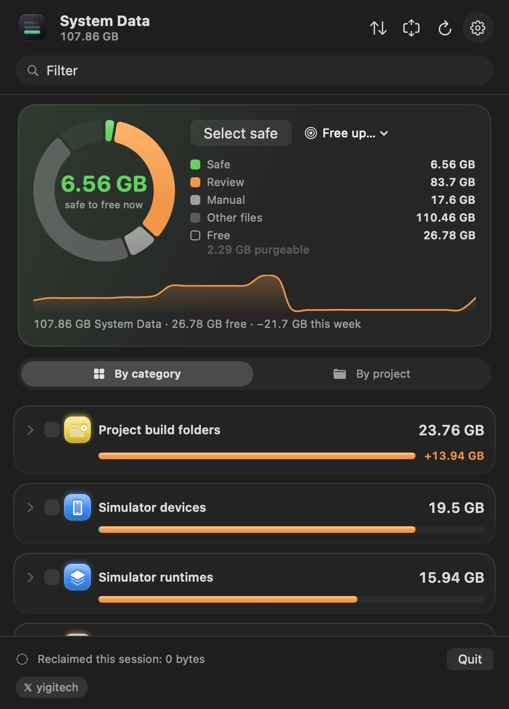

macOS calls it System Data. This app opens it.
Storage settings puts everything it cannot name into one grey bar. System Data Unpacked shows what is inside — simulators, Xcode builds, package caches, AI models, backups — and lets you delete it item by item, with every command shown first.
- Project build folders node_modules, .next23.8 GB
- Simulator devices19.5 GB
- Simulator runtimes15.9 GB
- Package managers Homebrew, uv13.3 GB
- AI models and tools8.1 GB
- Caches that rebuild6.6 GB
- Everything else20.7 GB
It never deletes anything you did not click.
Every item carries one of three badges, and every command is shown before it runs, including the ones that ask for your password.
Rebuilds on its own: caches, build products, logs. Deleting it costs a rebuild and nothing else.
Worth a look first: a simulator with apps on it, a model you downloaded. It goes to the Trash unless you choose to delete it now.
Not the app's to remove: a Homebrew install, a local snapshot. You get the exact command instead.
One window for the whole disk.
Open it from Applications or keep it in the menu bar. It scans in the background and remembers what changed.

- Free up an amount
- Ask for 20 GB and it selects the least worrying items that add up to it: safe ones first, then what has sat untouched longest.
- Projects, not folders
- One row per project with everything it costs: node_modules, build output, its DerivedData, its Docker images. Archive one in a click; source files are never touched.
- Why it grew
- A trend on every row, System Data over time, and a note when a category grows unusually fast, with the items behind it.
- AI models, one by one
- Ollama and Hugging Face models listed separately, sized without double counting shared layers, removed the way each tool expects.
- Touch ID before a delete
- An optional check with Touch ID, your Apple Watch or your password, so a click at an unlocked Mac is not enough.
- External drives
- Optionally looks for projects on plugged-in drives too. Time Machine disks and network shares are never walked.
- Stays on your Mac
- No account and no analytics. The only request it can make is an update check, off by default.
- Scriptable
--jsonprints the inventory,--cleanshows the weekly clean and--clean --applyruns it. Shortcuts and a desktop widget too.
What it finds
- Simulator devices and runtimes
- Xcode DerivedData, archives, device support
- npm, pnpm, yarn, Cargo, uv, pip and Homebrew caches
- Ollama, Hugging Face and LM Studio models
- Claude Code, Codex and Gemini data
- Docker images, volumes and VM disks
- iOS device backups
- Time Machine local snapshots
- Logs, diagnostics and temporary files
- Project build folders: node_modules, .build, Pods, .next
- Android SDKs and emulators
- Anything else large it cannot explain
What System Data actually is
What is System Data on a Mac?
It is the name Storage settings gives to everything it cannot file under Apps, Photos or Documents: caches, logs, simulator runtimes, local Time Machine snapshots, disk images, mail attachments, application support folders. It is not one thing, which is why the number gets large and why macOS shows you a bar instead of a list.
Why is my System Data so large?
On a Mac used for development it is usually a handful of folders: Xcode DerivedData and archives, simulator runtimes, npm and Homebrew caches, Docker disks, downloaded models. Each regenerates on demand, and together they pass 100 GB without anything being wrong.
Can I delete System Data?
Parts of it. Caches and build folders come back on their own, so removing them costs you a rebuild and nothing else. Snapshots and device backups are a decision rather than a cleanup. Nothing in macOS tells you which is which — this app labels every item before you touch it, and shows the command it will run.
Why does it ask for Full Disk Access?
Most of System Data sits in folders macOS protects, and without the grant they cannot even be measured. The app reads sizes and dates, not the contents of your files, and never your mail, messages or browsing history. It works without the grant too, with those places left out.